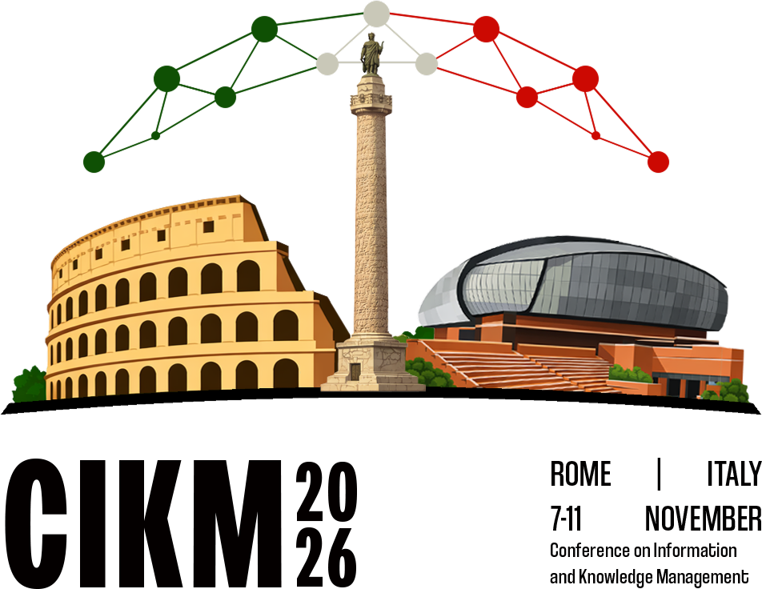

Forward-Looking Guidance for Iterative RAG in Multi-Hop Question Answering
1Jeonbuk National University 2Soongsil University 3Ulsan National Institute of Science and Technology
TL;DR
Let each step see
the rest of the plan.
- Forward-looking guidance (FG) lets each step also read the operations still ahead, Gi = (oi+1, …, on): no extra model calls, no extra retrieval.
- After retrieval, not in it. In extraction and reasoning, +.087 EM. In the retrieval query, −.035.
- Consistent. EM rises in 16 of 18 settings (3 planners × 3 datasets × 2 LLMs). On MuSiQue the gain is about 30% at every hop depth.
1Motivation
Planning-based iterative RAG (SelfAsk, DualRAG, STRIDE) resolves a plan o1, …, on one operation at a time, and each step sees only its own operation.
Takeaway. Each output should also serve the steps that follow.
2Forward-looking guidance
At step i, the remaining plan Gi is appended (⊕) to a module’s input:
Di = Retrieve(oi⊕Gi, ) (2)
fi = LLMext(promptext⊕Gi, oi, Di) (3)
ri = LLMrsn(promptrsn⊕Gi, oi, fi, S) (4)
Which module should read Gi? STRIDE, MuSiQue dev, Qwen3-8B
Takeaway. Look ahead after retrieval: use (3) and (4), not (2).
3Main results
EM, 1,000 test questions each. Bold best, underlined second, Δ under +FG.
Takeaway. FG lifts all three planners. STRIDE+FG is best on average.
4Analysis
MuSiQue EM by gold hop count STRIDEgain with FG%relative gain
Takeaway. The gain holds at every depth, for 2–5% more tokens.
5Case study
HotpotQA: “Which person that recorded the album Focus Plays Focus was born on 24 December 1946?” Both runs read the same passage for o1.
| Plan | STRIDE | STRIDE+FG |
|---|---|---|
| o1Who recorded the album? | Focus (the band)drops the members | Focus + Thijs van Leer, Jan Akkerman, Martin Dresden, Hans Cleuver |
| o2Birth date of each person? | birth date of Focus?unresolved: a band has none | birth date of each member?Jan Akkerman: 24 Dec 1946 |
| o3Who was born on 24 Dec 1946? | No answer | Jan Akkerman |
Takeaway. Knowing o2, step 1 keeps the people, not just the band.